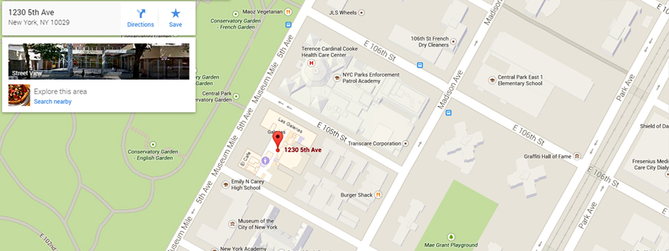

1230 5th Ave,
New York, NY 10029
Directions to El Museo
OPEN TUES — SAT FROM 11AM — 6PM

Subway
#6 train to 103rd Street station,
walk one block north to 104th Street,
then three blocks west to Fifth Avenue.
#2 or #3 train to 110th Street and Lenox Avenue,
walk one block east to Fifth Avenue, then south to 104th Street.
Bus
M1, M2, M3, M4 northbound on Madison Avenue or southbound on Fifth Avenue to 104th Street.
Car
RFK Bridge — Take FDR south, exit at 106th Street to Fifth Avenue.
George Washington Bridge — Take Harlem River Drive to FDR south, exit
at 106th Street to Fifth Avenue. Cross — Bronx Expressway —Take 87 south,
exit at 138th Street Bridge, and follow signs to Fifth Avenue.
Access
RFK Bridge — Take FDR south, exit at 106th Street to Fifth Avenue. George Washington Bridge — Take Harlem River Drive to FDR south, exit at 106th Street to Fifth Avenue. Cross-Bronx Expressway — Take 87 south, exit at 138th Street Bridge, and follow signs to Fifth Avenue. El Museo is accessible to wheelchair users. Street entrance is 1230 5th Ave between 104th and 105th Street. Wheelchairs are available for free at coat-check (first-come, first-served). For questions, contact Visitor Services at 212-660-7129.
Assistive Listening Devices
El Teatro is equipped with an infrared sound enhancement system (headsets and neck loops). Headsets and neck loops are available free of charge with ID at Visitor Services.